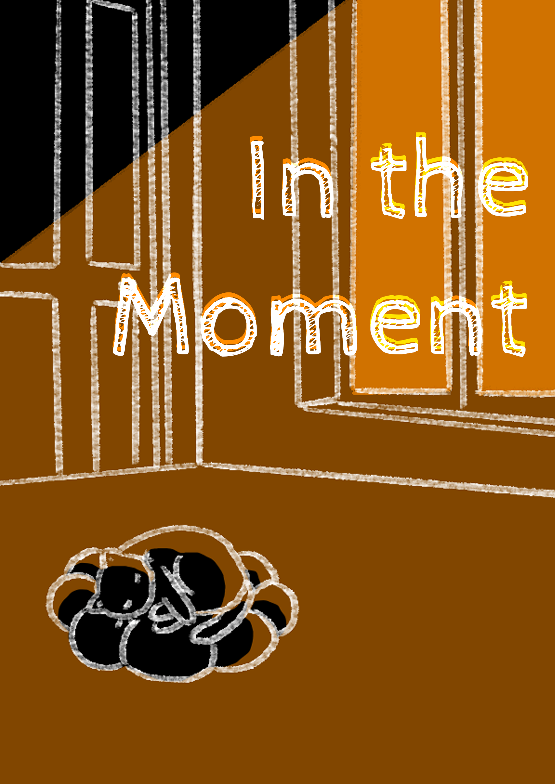

PROJECT / 04
In The Moment
PROJECT DESCRIPTION
My prompt for this project is:"Use time-constraint (limit) to observe how players make their choices base on their scale of priority in a 2D point and click game."
I explore time and nature disaster as forces — specifically, the pressure created by time constraints. In most games, time is something flexible: it can be stretched, paused, or ignored to fit the mechanics, or the natural disasters, even apocalyptic ones, can be prevented. But here in this theme, I want to embrace those elements.
With a hidden countdown, so players are never quite sure how much time they have left. This uncertainty aims to heighten their sense of urgency, pushing them to make rapid decisions or even panic under pressure. Through this mechanic, I wanted to examine how limited time can make even small choices feel significant.
